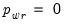
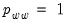
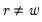

To estimate a switching VAR model, open the VAR estimation dialog and select from the dropdown menu. The dialog changes to show the settings for switching VARs:
The first tab contains the basic specification. The edit field on the left-hand side and most of the edit fields on the right are familiar from standard VAR estimation. You should enter the endogenous variables in the list, a list of lag pairs to specify the endogenous lags, and a list of Exogenous variables.
The section controls the specification of the regime probabilities.
Clicking on the tab displays options for modifying features of the switching specification and for controlling various aspects of the computation.
The options section may be used to specify the initial state probabilities and any restrictions to the regime probability vector or transition matrix.
Recall that evaluation of the likelihood in Markov switching and SSAR models requires presample values for the filtered probabilities (“Initial Probabilities”). The dropdown lets you choose the method of initializing these values ( (default), , , ). If you select , you will be prompted for the name of an

-element vector in the workfile that contains the initial probabilities.
The edit field allows you to specify restrictions on the regime probabilities. Markov switching models, in particular, will sometime require restrictions on transition matrix probabilities. For example, we may have  if it is impossible to transition directly from state

to state

. Similarly, if state

is an absorbing state, then  and

for .
The section contains the standard fields for setting the maximum number of iterations and convergence tolerance. By default, EViews will use the estimation settings from your global options.You may select the checkbox to display starting values and other estimation settings in the top section of your estimation output.
You may use the section to control the setting of initial parameter estimates. Switching regression models often have local roots and may be difficult to estimate so EViews offers a range of tools for choosing starting values.
The dropdown allows you to specify a basic method for choosing starting values (, , , , , ).
The and methods are self-explanatory, with the latter taken from the default coefficient vector specified in the dialog (typically the coefficient vector C).
The first two edit fields under allow you to choose random starting values based on the those specified in the dropdown.
For both initial and final randomization, the random starting values are chosen by taking the base values and adding random normals with scale given by the fraction of the root of the estimated coefficient variances (or the scale fraction itself if the variances are not available). The random values will be generated using the specified in the dropdown and the random specified in the edit field. If a random seed is not specified, EViews will obtain one from a single draw from the generator.
You may use the dropdown to instruct EViews to use the Hessian, the outer product of the gradient (OPG) method, or a Huber-White robust covariance that forms a sandwich using the Hessian and gradients.
The checkbox may be used to apply a d.f. correction.
You may use the dropdown menu to select a different method.


 , should be located in period
, should be located in period  of the workfile. That is, the
of the workfile. That is, the  data should be in period
data should be in period  of the workfile, not period
of the workfile, not period  . You may, of course, employ standard EViews lag expressions to refer to data in the previous period.
. You may, of course, employ standard EViews lag expressions to refer to data in the previous period. -element vector in the workfile (for a SSAR model), or an
-element vector in the workfile (for a SSAR model), or an  matrix in the workfile (for Markov switching) in the edit field. The vector or matrix should contain valid probability values for elements that are restricted and NAs for elements that are to be estimated. For example, in a three regime Markov switching model where state 3 is an absorbing state, you would have
matrix in the workfile (for Markov switching) in the edit field. The vector or matrix should contain valid probability values for elements that are restricted and NAs for elements that are to be estimated. For example, in a three regime Markov switching model where state 3 is an absorbing state, you would have